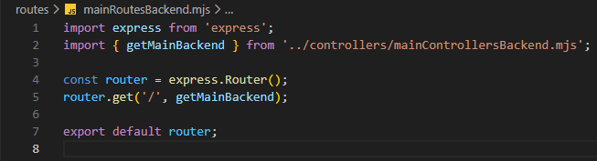

Alap route-olás - mainRoutesBackend.mjs
Alap route-olás - mainRoutesBackend.mjs

Ebben a részben szerkesztjük a routes mappában a mainRoutesBackend.mjs állományt, amelyben összesítjük a CRUD műveletekhez tartozó logikákat.
-
Szerkesszük a
mainRoutesBackend.mjsállományt.-
import express from 'express';- azexpressnpmcsomag beimportálása. -
import { getMainBackend } from '../controllers/mainControllersBackend.mjs';- agetMainBackendfüggvény nevesített beimportálása. -
const router = express.Router();- mivel a webszerver jelölésére azappcsak aserver.mjsállományban használható, ezért itt már csak arouterszóval hivatkozhatunk rá, amit azexpressobjektumRouter()függvényével hozunk létre. -
router.get('/', getMainBackend);- ahttp GET metódus-hoz tartozó logika hívása agetMainBackendfüggvény segítségével. -
export default router;- a szerver hívás alapértelmezett kivitele.
-